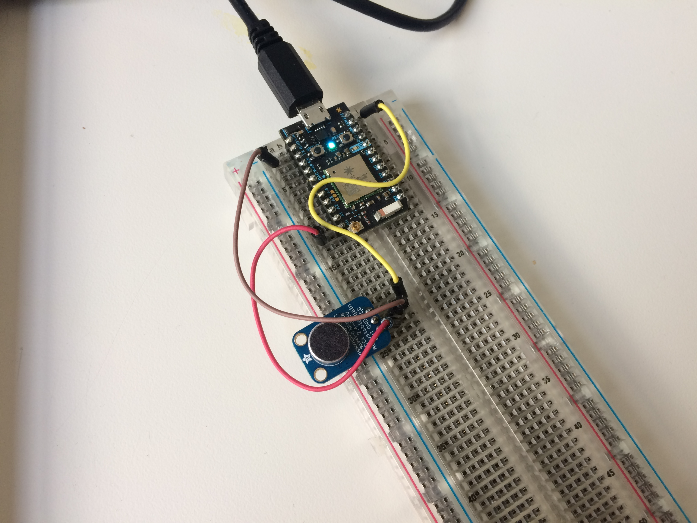

IoT Wi-fi Connected Microphone
A combined web-app/Internet of Things (IoT) solution that a Particle Photon to monitor the ambient volume of an indoor space instantaneously and track it over time.
A combined web-app/Internet of Things (IoT) solution that a Particle Photon to monitor the ambient volume of an indoor space instantaneously and track it over time.
A single-page web-app that allows project managers and freelance designers to track clients, projects, and tasks